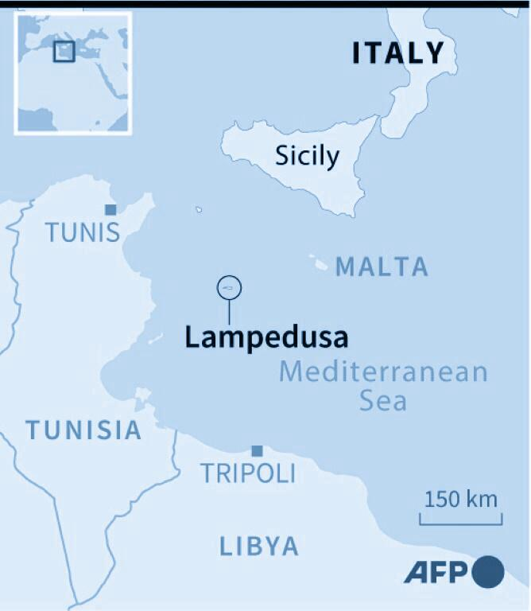

For sale: baby shoes, never worn.
One of the shortest but most effective stories of loss. It captures what the residents of Lampedusa, a small Italian island, had witnessed for years.
A small group of residents there called the Askavusa collective have been memorializing the journeys of thousands of migrants by collecting the things they left behind. These migrants who hope to start a new life, abandon the few things from their old life they had brought into their future.
The Askavusa collective created a depository memorializing these objects which Photographer Marco Parvan shot in his photojournalism project called Migrant Objects.
The collective acts in many ways like bowerbirds. Bowerbirds are famous for collecting the things left behind, but only BLUE.
67. A male satin bowerbird would not have left it there. A male satin bowerbird would have tottered with it in his beak over to his bower, or his “trysting place,” as some field guides put it, which he spends weeks adorning with blue objects in order to lure a female. Not only does the bowerbird collect and arrange blue objects—bus tickets, cicada wings, blue flowers, bottle caps, blue feathers plucked off smaller blue birds that he kills, if he must, to get their plumage —but he also paints his bower with juices from blue fruits, using the frayed end of a twig as a paintbrush. He builds competitively, stealing treasures from other birds, sometimes trashing their bowers entirely.- Bluets, Maggie Nelson
Why blue? People ask me this question often. I never know how to respond. We don’t get to choose what or whom we love, I want to say. We just don’t get to choose.
- Maggie Nelson, BluetsThat this blue exists makes my life a remarkable one, just to have seen it, to have seen such beautiful things. To find one placed in their midst. Choiceless.
- Maggie Nelson, BluetsBlue has no mind. It is not wise, nor does it promise any wisdom. It is beautiful, and despite what the poets and philosophers and theologians have said, I think beauty neither obscures the truth nor reveals it. Likewise, it leads neither toward justice nor away from it. It is pharmakon. It radiates.
- Maggie Nelson, BluetsFor sale: baby shoes, never worn.
Not many people of my parent’s generation in the diaspora have this wealth of old photographs, due to lack of resources or the displacement of personal items during exodus. - Yodith Dammlash
QUOTE.
“No one leaves home unless home is the mouth of a shark.”- Warshan Shire
QUOTE.
war and
running and
running.
I hear them say, go home
QUOTE.
But where is home?
“Refugees have been deprived of their homes,” said UN Secretary-General Ban Ki-moon, “but they must not be deprived of their futures.” Home is human right. Migration is not a new or phenomenonal or a crisis. Rather, what is always changing is how we perceive migration and the people displaced. After World War II, many homes were built for those who had been displaced due to the war. Ultimately, lines drawn on a map only dictate the very lives we live when we choose to let them.
Anne Frank once wrote that “Dead people receive more flowers than the living ones, because regret is stronger than gratitude.” Through the many stories told here maybe we too can do more than just collecting blue.